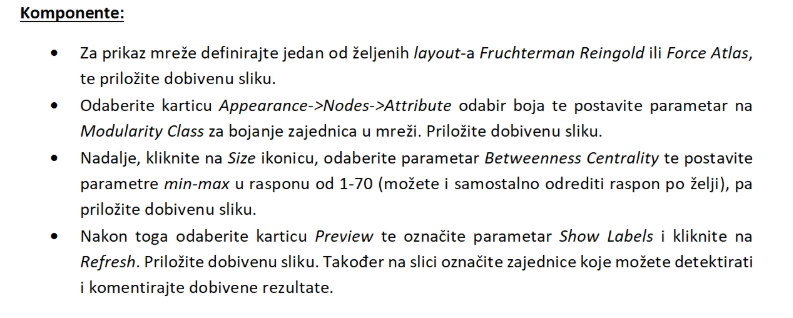
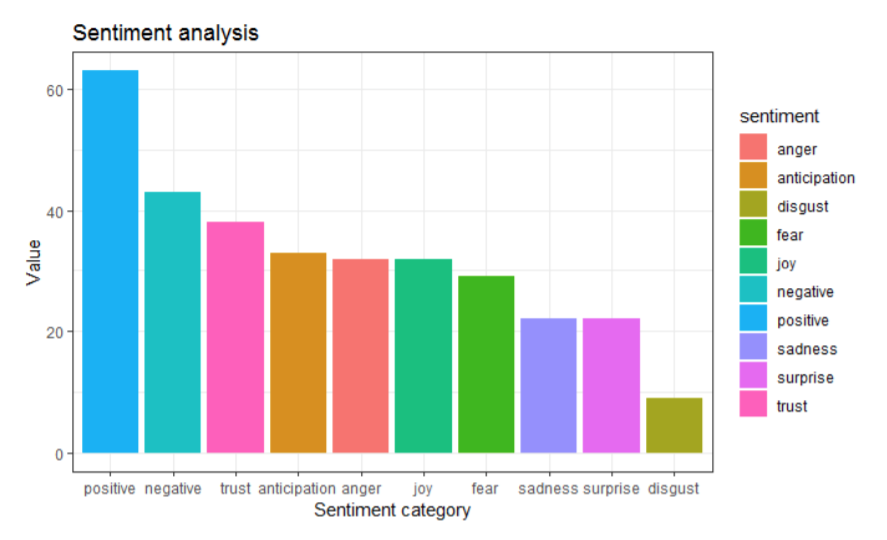
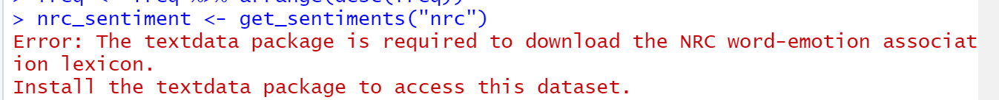

Kasperinac krivo sam shvatio pitalicu “da, ne” u vezi skidanja lexicona, kad se odabere da, problem nestane
 Ovo se odnosi na filtriranu mrežu ili početnu?
 Kako doci do ovog grafa?
MrDREDD to bi trebalo nakon pokretanja zadnjeg dijela skripte biti na desnoj strani u donjem kutu nacrtano
mornar Ica cudno, meni se ovo pojavljuje
MrDREDD nvm, riješeno
tito
Kako to točno izvest?
je li netko mozda na linuxu instaliro ovo smece i uspio… meni koji god paket zeli instalirati kaze da je exito s non zero kodom i da ga nemoze installat…
moukie isti problem… imas neko rjesenje?
rozy pusti to samo
mornar Ica kako si rješio ovaj problem?
pina_be pokretao sam naredbe blok po blok umjesto jednu po jednu liniju oa je radilo u redu
ima jos netko da ne moze naci “PageRank” i “Eigenvector Centrality” nigdje u Gephiju?
rozy jesi išao po uputama na materijalima
rozy okej ako nekome bude trebalo isto, samo treba to runnat tamo pod Statistics i onda se doda i u tablicu
Gdje se vidi koje su najcesce pozitivne rijeci u ovoj retardaciji
 dal netko ima ovu grešku
Just_some_name
install.packages(“textdata”) trebaš runnat mislim
Jesam samo ja dobio nekog švicarca? Većina riječi mi je na njemačkom…
sekiro dobro si prošao, meni je sve na francuskom
Kasperinac noice
Kasperinac Šta se žalite ekipa, ja sam dobio nekog FInca, trebalo mi pola dana da shvatim da skripta ne izbacuje random stringove nego da su to zapravo finske riječi